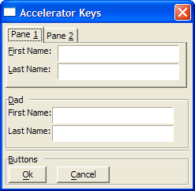

Accelerator Keys
You may create an accelerator key by placing an ampersand "&" before a character in a text label or in the name of a pane or frame. Pressing ALT and the indicated key moves focus to the control.
 Note : To display an
ampersand "&" character, use "&&".
Note : To display an
ampersand "&" character, use "&&".

ALT + 1 sets focus to Pane 1.
ALT + 2 sets focus to Pane 2.
ALT + F sets focus to the First Name field on Pane 1.
ALT + L sets focus to the Last Name field on Pane 1.
ALT + D sets focus to the First Name field in the Dad frame.
ALT + B sets focus to the Button frame.
ALT + O clicks the OK button.
ALT + C clicks the Cancel button.
Examples
|
result = ui_dlg_box("xx",<<%dlg% {region} {tab=x} {pane=Pane &1} &First Name:|[.30firstname]; &Last Name:|[.30lastname]; {pane=Pane &2} Company:|[.30company]; {endtab} {endregion}; {frame=1,1&Dad} {region} First Name:|[.30firstname]; Last Name:|[.30lastname]; {endregion}; {line=1}; {frame=&Buttons} <*&Ok> <&Cancel> %dlg%,) ui_dlg_box("Result","Result = "+result+";<&Ok>") |